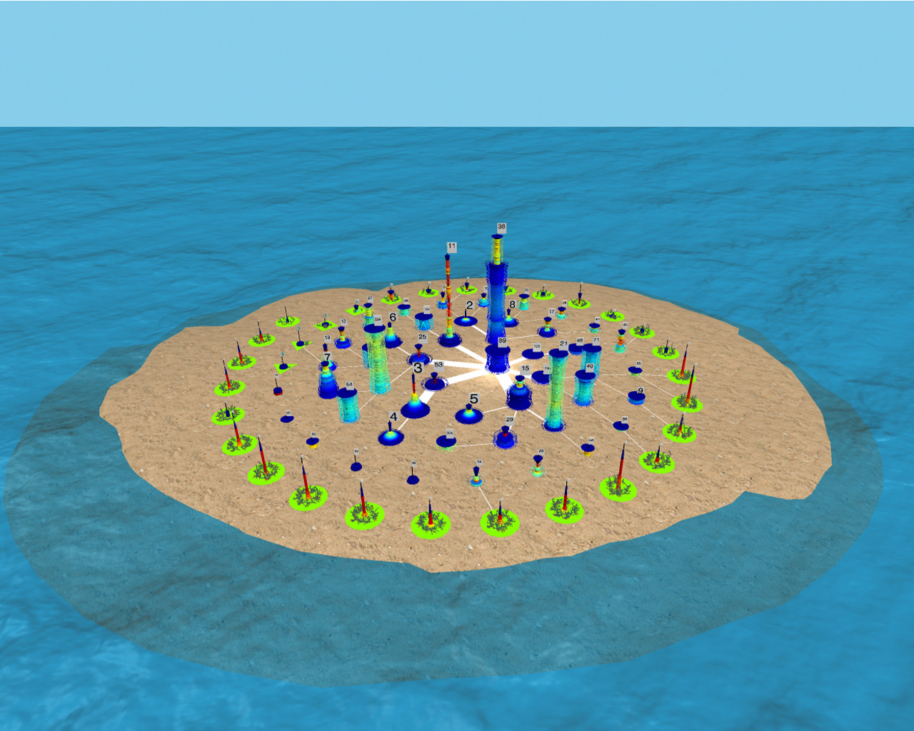

|

|
|
Abstract:
''Graph Cities'' are 3D representations of maximal edge graph partitions. Each connected equivalence class corresponds to a ''Building'' that is formed by stacking graph ''Edge Fragments''. The number of such graph edge fragments determines the height of the building. The overall number of buildings is the number of equivalence classes in the edge partition. A poly-log bucketization of the size distribution of the equivalence classes is used to generate a 2D position for each bucket. For the buckets containing more than one equivalence class, we also generate a visual ''Bush'' representation. The Delaunay triangulation of these building locations determines the ''street network'' of the Graph City. The weight of a connection between two buildings on this street network is proportional to the intersection of the subgraph vertex sets represented by the two buildings. To handle equivalence classes (i.e., buildings) consisting of a large number of fragments, we use the notion of ''Graph Waves'' from [Abello and Nakhimovich 2020]. Graph Waves are intervals of graph edge fragments with a ''well-defined'' beginning and end fragment. For computational purposes, the beginning and end fragments should satisfy a computationally ''easy to verify'' property. We illustrate Graph Cities obtained with the maximal edge partitions defined by the iterative edge core decomposition introduced in [Abello and Queyroi 2013]. The graphs used include the Friendster social network (1.8 billion edges), a co-occurrence keywords network derived from the internet movie database (115 million edges), and a patents citation network (16.5 million edges). For graphs with up to 2 billion edges, all the elements of their corresponding Graph Cities are built in a few minutes (excluding I/O time) and storage proportional to the number of edges and vertices of a graph. Our ultimate goal is to obtain humanly-interpretable hierarchical descriptions of any graph that are accessible via a Unified Web Interface for Graph Analytics, without being constrained by the graph size.
|

![[PHOTO]](../../images/knight_small.png)